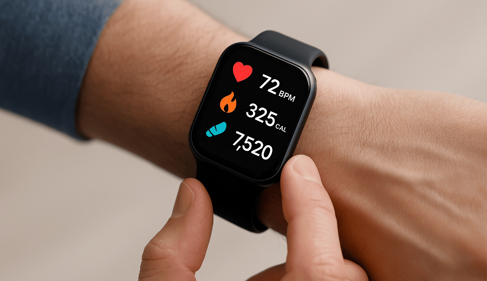

How Pavlok Works
How Pavlok Works: The Shockingly Smart Way to Break Bad Habits
Pavlok is not your average wearable. It doesn’t just count your steps or measure your heart rate—it helps you break bad habits using science-backed feedback techniques like vibration, beep, and yes—mild electric shock. But how exactly does it work? Let’s break it down.
The Science Behind Pavlok
At its core, Pavlok is based on the concept of aversion therapy. This psychological principle suggests that pairing a negative stimulus—like a mild shock—with an unwanted behavior can help you associate that behavior with discomfort, so eventually, you avoid it.
For example, if you want to stop nail biting, you can set Pavlok to deliver a small electric pulse every time the behavior occurs. Over time, your brain begins to recognize that habit as something unpleasant, which helps you break it.
How Does Pavlok Work?
Pavlok works through a combination of sensors, app input, and user interaction. When you notice yourself engaging in a habit—or when the device detects certain motion patterns—it triggers a gentle yet noticeable stimulus through the wristband.
The Pavlok wristband pairs with a mobile app where you can set goals, schedule reminders, and track your progress. You can choose from various feedback types: a vibration to nudge you, a beep to alert you, or a zap to capture your attention.
What’s Inside the Device?
Pavlok is equipped with a compact module that includes a battery, a Bluetooth chip, and a feedback delivery system. The device is designed to provide a mild, safe shock that is fully customizable to match your comfort level. Although the shock typically uses between 150–450 volts, it has a low current, making it more of a quick snap than a harmful jolt.
How Well Does Pavlok Work?
Thousands of users have reported positive changes using Pavlok. From overcoming procrastination to quitting smoking and reducing unhealthy snacking, the device builds accountability and self-awareness. With the ability to integrate with apps or even let a friend control your feedback remotely, Pavlok helps train your brain to gradually abandon bad habits.
Pavlok 2 – What’s New?
The second-generation Pavlok offers improvements such as stronger battery life, better Bluetooth support, and new app integrations. It is more precise in detecting hand movements and provides enhanced shock calibration, making it faster, stronger, and smarter in helping you change your habits.
Final Thoughts
Pavlok works because it interrupts your habits in real time. The combination of increased awareness, direct control, and instant feedback forms a powerful system for behavior change. Whether you’re simply curious or truly committed to reshaping your habits, Pavlok offers a shockingly effective solution.